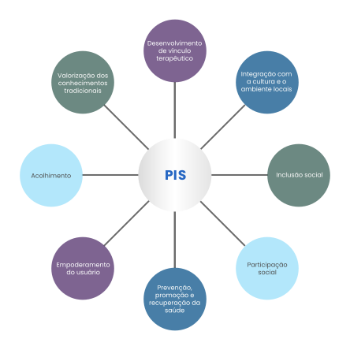

<div class="coluna-esquerda altura-1_1 largura-1_3 centro">
    
</div>
<div class="coluna-direita" style="margin-right: 35px;margin-top: 40px;">
    <p>A figura a seguir destaca as principais consequências da inclusão das PIS nos sistemas de saúde.</p>
    
</div>